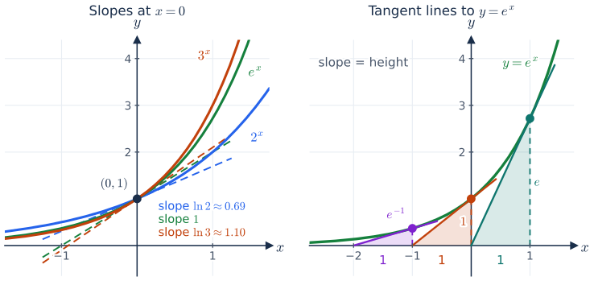
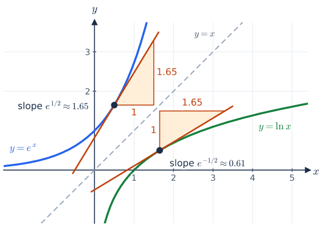
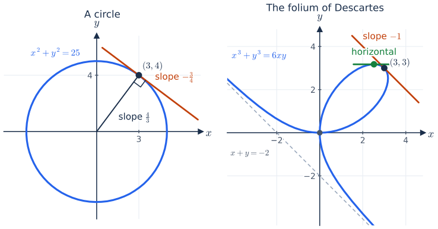
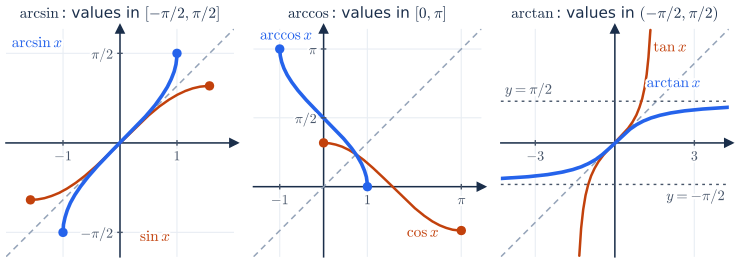
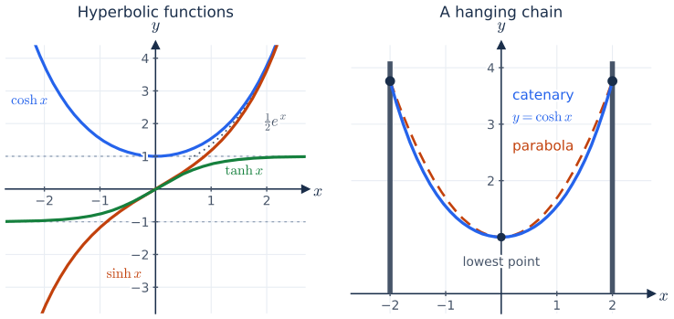

Module 6Exponentials, logarithms and implicit differentiation
Find out where the number e comes from and why e to the x is its own derivative. Then differentiate logarithms, inverse functions, the inverse trigonometric and hyperbolic functions and curves given by equations, and check the formulas of exponential growth and decay.
⏱ 270 minYou need: Modules 1 to 5, especially the chain rule
In this module you will
Explain how compound interest and the slope of ax at 0 both lead to the number e, and what is proved and what is assumed
Differentiate exponential and logarithmic functions with any base
Find derivatives of inverse functions, including lnx and the inverse trigonometric functions
Use implicit and logarithmic differentiation to find slopes and tangent lines
Work with the hyperbolic functions and their derivatives
Verify that Cekt solves y′=ky, and compute doubling times and half-lives
1
The number e
Module 1 introduced Euler’s number e≈2.71828, and the natural logarithm ln as the inverse of ex, and promised to show where e comes from. It comes from two places at once. One is money: interest that is added to an account more and more often. The other is slopes: among all the exponential functions ax, exactly one has slope 1 where it crosses the y-axis. This section follows both routes, and Section 6.3 shows that they arrive at the same number.
Compound interest
Suppose a bank pays interest at 100% a year (an absurd rate, chosen to keep the numbers simple), and you deposit £1. If the interest is added once, at the end of the year, you then have £2. If instead the bank adds half the yearly rate, 50%, every six months, the interest earned in the first half-year earns interest itself in the second, and after a year you have (1+21)2=2.25 pounds. With interest added n times a year, at the rate n1 each time, every addition multiplies the balance by 1+n1, so after a year you have
(1+n1)n pounds.
Here it is with interest added yearly, every six months, every quarter, monthly, weekly, daily (n=365), hourly (n=8760) and every minute (n=525,600):
n
(1+n1)n
1
2
2
2.25
4
2.441406
12
2.613035
52
2.692597
365
2.714567
8760
2.718127
525600
2.718279
More frequent compounding helps, but less and less: going from daily to every minute gains less than half a penny. The amounts settle down to a limit, about 2.71828, which is what you would have if interest were added continually, at every instant: continuous compounding. Section 6.3 proves that this limit is e.
The slope of ax at 0
Every exponential function ax passes through (0,1), since a0=1. How steep is its graph there? By Module 4, the slope of the tangent line at x=0 is the limit, as h→0, of the difference quotients
ha0+h−a0=hah−1.
For a=2 and a=3:
h
h2h−1
h3h−1
0.1
0.717735
1.16123
0.01
0.695555
1.10467
0.001
0.693387
1.09922
0.0001
0.693171
1.09867
−0.0001
0.693123
1.09855
−0.001
0.692907
1.09801
−0.01
0.690750
1.09260
−0.1
0.669670
1.04042
From both sides the quotients settle down: the slope of 2x at 0 is about 0.6931, and that of 3x about 1.0986. Write
m(a)=h→0limhah−1,
read “m of a”, for the slope of ax at x=0 (m for slope, as in Module 1). The table suggests that m(2)≈0.6931 and m(3)≈1.0986. The slope at 0 decides the slope everywhere:
Theorem 6.1The derivative of an exponential
Let a>0, and suppose that the limit m(a) exists, that is, that ax is differentiable at x=0. Then ax is differentiable at every x, and
dxd(ax)=m(a)ax.
Proof
Fix x. By the law of exponents ax+h=axah,
hax+h−ax=haxah−ax=ax⋅hah−1.
As h→0, the factor ax does not change and the second factor approaches m(a), so by the limit law for products the difference quotient approaches axm(a).
∎
Key idea
The slope of an exponential at any point is its height there times its slope at 0. An exponential grows at a rate proportional to its own size; Section 6.8 shows what that means for populations, money and radioactive decay.
The base with slope 1
Since m(2)<1<m(3), somewhere between 2 and 3 there should be a base whose exponential has slope exactly 1 at 0. To find it, see what raising the base to a power does to the slope at 0.
Theorem 6.2Changing the base
Let a>0, and suppose that m(a) exists. Then for every real number c,m(ac) exists and
m(ac)=cm(a).
Proof
For c=0,a0=1 and 1h=1, so every quotient is 0, and m(1)=0=0⋅m(a). For c=0,(ac)h=ach by the laws of exponents, so for h=0
h(ac)h−1=c⋅chach−1.
Write k=ch. As h→0,k→0, and k=0 when h=0; so the fraction kak−1 approaches m(a), and the whole expression approaches cm(a).
∎
Now choose c=1/m(2), which is allowed because m(2), about 0.69, is not 0. By Theorem 6.2, the base 21/m(2) has slope m(2)1⋅m(2)=1 at 0. To find it, estimate m(2) more closely. The average of the two quotients of the table nearest to h=0, 0.693171 and 0.693123, is the central difference of Module 4, which is much more accurate than either: m(2)≈0.693147. Then 1/m(2)≈1.442695, and the base is about 21.442695≈2.718282: the digits of Module 1’s e.
Definition 6.1The number e
Euler’s numbere is the base whose exponential has slope 1 at x=0:
h→0limheh−1=1.
The natural logarithm is, as in Module 1, the inverse of ex: for x>0,lnx=y means ey=x.
Good to know
What is proved and what is taken on trust. This section takes two things on trust. The first is Module 1’s powers ax for every real x, with the properties that Module 1 listed: the laws of exponents (for an irrational x,ax is the number that the powers with rational exponents close to x approach), and, for a base a>1, that ax increases and takes every positive value exactly once, so that logarithms exist. The second is that the limit m(2) exists and is positive: the table leaves little doubt that it is about 0.6931, and the Going deeper box later in this section sketches how both facts can be proved. Everything else in this section is proved from these two. Theorem 6.2 shows that the base 21/m(2) has slope 1 at 0, so e exists, and the next theorem shows that no other base does.
Theorem 6.3Derivatives of ex and ax
For every real x,
dxd(ex)=ex.
For every base a>0:ax=exlna, the slope of ax at 0 is m(a)=lna, and
dxd(ax)=axlna.
Proof
By Definition 6.1, m(e)=1, so Theorem 6.1 gives (ex)′=1⋅ex=ex. Let a>0. Then a=elna (Module 1), so by the law (au)v=auv,ax=(elna)x=exlna. Theorem 6.2, with base e and c=lna, gives m(a)=m(elna)=lna⋅m(e)=lna, and Theorem 6.1 finishes the proof.
∎
So m(2)=ln2 and m(3)=ln3, the limits in the table, and e is the only base with slope 1 at 0: m(a)=1 means lna=1, that is, a=e. You can also reach (ax)′=axlna with the chain rule of Module 5: the derivative of exlna is exlna⋅lna=axlna.

Figure 6.1
Left: 2x,ex and 3x all pass through (0,1), where their tangent lines (dashed) have slopes ln2≈0.69, exactly 1, and ln3≈1.10. Right: the tangent lines to y=ex at x=−1, 0 and 1. Each meets the x-axis 1 unit to the left of its point of contact, so its slope, rise over run, equals the height ex there: the function is its own derivative.
Try it
Move the slider, or type a base, until the orange tangent line at x=0 lies along the dashed line of slope 1. The readout estimates the slope at 0 with a difference quotient and tells you when it is within 0.001 of 1: how many digits of e can you find? Then press Show ln a and compare the slope with lna for a few bases, and press Show e. The green line is the tangent at x=1; check that its slope is a times the slope at 0, as Theorem 6.1 says.
Example 6.1Derivatives with ex and ax✓ Checked
Differentiate (a) e3x, (b) x2e−x and (c) 10x, and (d) find the tangent line to y=ex at x=1.
(a) By the chain rule with the inner function 3x,dxde3x=e3x⋅3=3e3x. In the same way, dxdekx=kekx for every constant k.
(b) By the product rule, and (a) with k=−1:
dxd(x2e−x)=2xe−x+x2(−e−x)=(2x−x2)e−x.
(c) By Theorem 6.3 with a=10,dxd10x=10xln10≈2.303⋅10x.
(d) At x=1 the height is e and the slope is e1=e, so the tangent line is y−e=e(x−1), that is, y=ex. It passes through the origin, as the right panel of Figure 6.1 shows.
Watch out
The power rule is for powers xn, with the variable in the base. It does not apply to ex or 2x, where the variable is in the exponent: dxdex is not xex−1, and dxd2x is neither x2x−1 nor 2x. And e2≈7.39 is a constant, so its derivative is 0.
Going deeperWhy the limit exists, and another road to e
The limit m(2). For h=0 let q(h)=h2h−1, the slope of the chord of the graph of 2x from (0,1) to (h,2h). The graph of 2x bends upwards (it is convex), so this slope grows as h moves to the right: q increases on each side of 0, and every value with h<0 is below every value with h>0. So as h decreases to 0, q(h) decreases but stays above q(−1)=21, and a quantity that decreases but stays above a fixed number approaches a limit: this is a basic property of the real numbers, made precise for sequences in Module 14. In the same way q(h) increases to a limit as h increases to 0, staying below q(1)=1. The two one-sided limits are equal, because q(−h)=2−hq(h) and 2−h→1. So m(2) exists, and it lies between 21 and 1; in particular it is positive. The step left out here is the proof that 2x is convex, which takes more work with real exponents.
Another road: start from the logarithm. Module 10 makes possible a route that takes nothing about powers on trust; it rests instead on a theorem that Module 9 uses without proof, that a continuous function has an integral. Define, for x>0,
lnx=∫1xtdt,
the area under the curve y=1/t from 1 to x (counted as negative when x<1). The Fundamental Theorem of Calculus gives (lnx)′=1/x at once; the laws of logarithms follow from it, with a theorem of Module 8; ln increases and takes every real value, so it has an inverse function, exp;e is exp(1), the number for which the area from 1 to e is exactly 1; and for a>0 and every real x one definesax=exp(xlna), which also settles what irrational powers mean. Theorem 6.4 below then gives exp′=exp. The functions are the same as in this section; only the order of the proofs changes.
Compute itHunting for e
Python can estimate the slope of ax at 0 with a difference quotient. The symmetric quotient 2hah−a−h, the central difference of Module 4, is much more accurate than hah−1 for the same h:
Python
import math
defslope_at_0(a, h=1e-6):
return (a**h - a**(-h))/(2*h) # central difference at x = 0for a in [2, 2.5, 2.7, 2.72, 2.8, 3]:
print(f"a = {a}: slope at 0 ≈ {slope_at_0(a):.6f}")
Output
a = 2: slope at 0 ≈ 0.693147
a = 2.5: slope at 0 ≈ 0.916291
a = 2.7: slope at 0 ≈ 0.993252
a = 2.72: slope at 0 ≈ 1.000632
a = 2.8: slope at 0 ≈ 1.029619
a = 3: slope at 0 ≈ 1.098612
The slope passes 1 between 2.7 and 2.72. The bisection method of Module 3 closes in on the crossing, keeping at each step the half of the interval where the slope passes 1:
Python
lo, hi = 2.0, 3.0for step inrange(30):
mid = (lo + hi)/2ifslope_at_0(mid) < 1:
lo = mid
else:
hi = mid
print(f"e lies between {lo:.10f} and {hi:.10f}")
print(f"math.e is {math.e:.10f}")
Output
e lies between 2.7182818279 and 2.7182818288
math.e is 2.7182818285
Thirty halvings shrink the interval to a width of 2−30, less than 10−9, and pin e down to eight decimal places, 2.71828182. Compound interest is a poor way to compute e on a computer:
Python
for k in [4, 8, 12, 15, 16]:
n = 10**k
print(f"n = 10^{k}: {(1 + 1/n)**n}")
Output
n = 10^4: 2.7181459268249255
n = 10^8: 2.7182817983473577
n = 10^12: 2.7185234960372378
n = 10^15: 3.035035206549262
n = 10^16: 1.0
Up to n=108 the values approach e, but then they go wrong, and for n=1016 the answer is 1. The computer stores 1+1/n rounded to about 16 significant digits: for n=1016 it stores exactly 1, and 1n=1; for n=1015 it stores 1+1.11×10−15, 11% too far from 1, and the power turns that error into e1.11≈3.035. The cause is the one behind the cancellation error of Module 2: a floating-point number keeps only about 16 significant digits.
2
Derivatives of inverse functions
By Module 1, the graph of an inverse function f−1 is the mirror image of the graph of f in the line y=x. Reflection carries tangent lines to tangent lines, so it should also tell you the slopes of f−1. Reflection in y=x swaps the two coordinates, so it swaps rise and run: a line with slope runrise=m becomes a line with slope riserun=m1 (Figure 6.2). So if the graph of f has slope m at (a,b), the graph of f−1 should have slope 1/m at the mirror point (b,a).

Figure 6.2
y=ex and its inverse y=lnx are mirror images in the line y=x (dashed). The tangent line to ex at (21,e1/2) has slope e1/2≈1.65: run 1, rise 1.65. Its mirror image is the tangent line to lnx at (e1/2,21), with run 1.65 and rise 1: slope 1/e1/2≈0.61.
To turn the picture into a theorem you need one fact about continuity, which this series uses without proof.
Good to know
A fact about inverse functions. If f is continuous and one-to-one on an open interval I, then f is strictly increasing on I or strictly decreasing on I, its values form an open interval J, and f−1 is continuous on J. The idea: if f went up and then down, the Intermediate Value Theorem of Module 3 would make it take some value twice; and, as Module 3 noted, the mirror image of an unbroken graph that only rises (or only falls) is again unbroken.
Theorem 6.4The derivative of an inverse function
Let f be continuous and one-to-one on an open interval I, and let a be a point of I where f is differentiable with f′(a)=0. Then f−1 is differentiable at b=f(a), and
(f−1)′(b)=f′(a)1=f′(f−1(b))1.
Proof
Let J be the interval of values of f, as in the fact above. For y=b in J, let x=f−1(y). Then f(x)=y, and x=a, because f−1 is one-to-one. So
As y→b,x=f−1(y) approaches f−1(b)=a, because f−1 is continuous, and x=a. So the difference quotient in the denominator approaches f′(a), which is not 0, and by the limit law for quotients the whole expression approaches 1/f′(a).
∎
The hypothesis f′(a)=0 is needed. f(x)=x3 is one-to-one with f′(0)=0, and its inverse 3x has a vertical tangent at 0: for y>0 its difference quotient y−03y−0=y−2/3 grows without bound as y→0. The other hypotheses make sure that f−1 exists and is continuous.
Tip
To remember the formula, suppose that f−1 is differentiable, and differentiate both sides of f(f−1(x))=x with the chain rule: f′(f−1(x))⋅(f−1)′(x)=1, then divide. This derivation assumes what the theorem proves, that f−1 is differentiable, so it is a memory aid, not a proof.
Example 6.2An inverse without a formula✓ Checked
In Module 1’s Exercise 1.10 you showed that f(x)=x3+x is strictly increasing on R, so it has an inverse, although solving x3+x=y for x is hard. Find (f−1)′(2) and (f−1)′(10), and the tangent line to the graph of f−1 at (2,1).
f is a polynomial, so it is differentiable, hence continuous, on R, with f′(x)=3x2+1≥1: never 0. To use Theorem 6.4 at b=2, you need a=f−1(2), the solution of x3+x=2. Try small whole numbers: x=1 works. So
(f−1)′(2)=f′(1)1=3+11=41.
In the same way f(2)=8+2=10, so (f−1)′(10)=f′(2)1=131. The tangent line to the graph of f−1 at (2,1) has slope 41: it is y=1+41(x−2), that is, y=41x+21.
Watch out
The slope of f−1 at b is the reciprocal of the slope of f at the mirror pointa=f−1(b), not at b. In Example 6.2, (f−1)′(2)=41, not f′(2)1=131. First find a, then compute 1/f′(a).
3
Logarithms
The derivative of ln x
Theorem 6.5The derivative of the logarithm
For every x>0,
dxdlnx=x1,
and for every x=0,
dxdln∣x∣=x1.
Proof
Apply Theorem 6.4 to f(x)=ex on the open interval I=R. It is differentiable, hence continuous, and one-to-one (Module 1); its derivative ex is never 0; its values form J=(0,∞); and its inverse is ln. For b>0 let a=lnb. Then
(ln)′(b)=f′(a)1=elnb1=b1.
For x>0,ln∣x∣=lnx, with derivative x1. For x<0,ln∣x∣=ln(−x), and by the chain rule its derivative is −x1⋅(−1)=x1.
∎
The graph of lnx (Figure 6.2) climbs steeply near 0, where 1/x is large, and flattens out as x grows; but its slope 1/x stays positive, so lnx keeps increasing, more and more slowly. At x=1 its slope is 1, the mirror image of the slope 1 of ex at 0. With the chain rule, for a differentiable function u of x,
dxdlnudxdln∣u∣=uu′where u>0,=uu′where u=0.
Example 6.3Derivatives with logarithms✓ Checked
Differentiate (a) ln(x2+1), (b) ln∣cosx∣, where cosx=0, and (c) lnx2+1x3, for x>0.
(a) Here u=x2+1>0, so dxdln(x2+1)=x2+12x.
(b) Here u=cosx, so dxdln∣cosx∣=cosx−sinx=−tanx.
(c) Use the laws of logarithms first: they turn the quotient and the powers into a sum. For x>0,
lnx2+1x3=3lnx−21ln(x2+1),
so the derivative is
x3−21⋅x2+12x=x3−x2+1x.
Watch out
The derivative of lnu is uu′, not u1:dxdln(x2+1) is not x2+11. And dxdln(5x)=5x5=x1, the same as the derivative of lnx. That is no accident: ln(5x)=ln5+lnx, so the two functions differ by a constant.
Other bases
For a base a>0 with a=1,logax=lnalnx (Module 1), and lna is a constant, so for x>0
dxdlogax=xlna1.
For example dxdlog10x=xln101≈x0.4343 and dxdlog2x=xln21≈x1.4427. Only the natural logarithm has the factor 1. That is why calculus uses ln, as it uses ex: the formulas dxdax=axlna and dxdlogax=xlna1 both lose their factor lna exactly when a=e.
The two routes meet
Now the compound interest table can be explained. The derivative of ln at 1 is 11=1, and ln1=0, so
h→0limhln(1+h)=h→0limhln(1+h)−ln1=1.
Theorem 6.6e as a limit
For every real number x,
n→∞lim(1+nx)n=ex,
and in particular
n→∞lim(1+n1)n=e.
Proof
For x=0 both sides are 1. Let x=0, and take n>∣x∣, so that 1+x/n>0. Every positive number p is elnp, so pn=enlnp, and
(1+nx)n=enln(1+x/n).
Write h=x/n, so that n=x/h. Then
nln(1+nx)=x⋅hln(1+h).
As n→∞,h→0 with h=0, so this approaches x⋅1=x. Finally, eu is continuous (it is differentiable, and Module 4 showed that differentiable functions are continuous), so enln(1+x/n) approaches ex.
∎
So the two routes lead to the same number: the limit of compound interest is the base whose exponential has slope 1 at 0.
Example 6.4Continuous compounding✓ Checked
Suppose you invest £1000 at an interest rate of 5% a year. Compare the balance after one year when interest is added yearly, quarterly, monthly, daily and continuously, and find how long the money takes to double with continuous compounding.
With interest added n times a year, each addition multiplies the balance by 1+n0.05, so after one year the balance is 1000(1+n0.05)n pounds:
n
1000(1+n0.05)n
1
1050.00
4
1050.95
12
1051.16
365
1051.27
By Theorem 6.6 with x=0.05, continuous compounding gives 1000e0.05≈1051.27 pounds after a year: the same as daily compounding, to the penny. After t years with interest added n times a year, the balance is
1000(1+n0.05)nt=1000[(1+n0.05)n]t,
which approaches 1000(e0.05)t=1000e0.05t as n→∞. It doubles when e0.05t=2, that is, when 0.05t=ln2:
t=0.05ln2≈13.86 years.
4
Implicit differentiation
The circle x2+y2=25, of radius 5 centred at the origin, is not the graph of a function: it fails the vertical line test of Module 1. But near the point (3,4) it is one: the upper half of the circle is the graph of y=25−x2, and the chain rule gives its slope,
dxdy=225−x2−2x=−25−x2x,
which at x=3 is −163=−43.
You can find this slope without solving for y. Near (3,4), think of y as a function of x,y=y(x), whose graph is that part of the circle. Then x2+y(x)2=25 for every x near 3: the two sides are the same function of x, so they have the same derivative. Differentiate both sides with respect to x, with the chain rule on y2:
2x+2ydxdy=0,sodxdy=−yx(y=0).
At (3,4) this gives −43 again. The same formula works at every point of the circle with y=0: at (3,−4), on the lower half, the slope is +43. This is implicit differentiation: the equation defines y as a function of x only implicitly, and you differentiate the equation as it stands. The answer has a geometric meaning (Figure 6.3, left): the radius from the origin to (x,y) has slope y/x (when x=0), and the product of the two slopes is (y/x)(−x/y)=−1, so the tangent line is perpendicular to the radius, as school geometry says it must be.

Figure 6.3
Left: the circle x2+y2=25 and its tangent line at (3,4), perpendicular to the radius. Right: the folium of Descartes, x3+y3=6xy, with its tangent line at (3,3), of slope −1, and the horizontal tangent line at the top of the loop, (24/3,25/3)≈(2.52,3.17). At the origin the curve crosses itself, and has no single tangent line. Its two arms approach the dashed line x+y=−2.
Key idea
Implicit differentiation. To find dxdy on a curve given by an equation in x and y:
Differentiate both sides with respect to x, treating y as a function of x. Every term with y needs the chain rule, as in dxdyn=nyn−1dxdy, and products such as xy need the product rule.
Collect the terms with dxdy on one side, and factor it out.
Divide by its coefficient, where that coefficient is not 0. The answer usually contains both x and y: evaluate it at a point of the curve.
The method assumes that near the point the equation does define y as a differentiable function of x. A theorem of several-variable calculus, the implicit function theorem, guarantees this at a point of the curve where the coefficient of dy/dx in step 3 is not 0, provided that the equation is built from functions with continuous derivatives near the point, as the equations of this module are near the points where they are used. This series uses the theorem without proof; Module 17 states it precisely. Where the coefficient is 0, look more closely: the circle has vertical tangent lines at (±5,0), where y=0.
Example 6.5The folium of Descartes✓ Checked
The curve x3+y3=6xy (Figure 6.3, right) is called the folium (Latin for “leaf”) of Descartes. Show that (3,3) lies on it, find the tangent line there, and find the points where the tangent line is horizontal.
At (3,3),x3+y3=27+27=54 and 6xy=6⋅3⋅3=54, so the point is on the curve. Differentiate both sides, with the chain rule on y3 and the product rule on 6xy:
3x2+3y2y′=6y+6xy′.
Collect the terms with y′ on the left and factor, then divide by 3y2−6x=3(y2−2x) where it is not 0:
(3y2−6x)y′y′=6y−3x2,=y2−2x2y−x2(y2=2x).
At (3,3),y′=9−66−9=−1, and the tangent line is y−3=−(x−3), that is, y=6−x.
The tangent line is horizontal where y′=0: where the numerator 2y−x2 is 0 and the denominator is not. Substitute y=x2/2 into the equation of the curve, subtract x3 from both sides, and multiply by 8:
x3+8x6x6x3(x3−16)=6x⋅2x2=3x3,=16x3,=0.
The root x=0 gives the origin, where the denominator y2−2x is 0 too, so the formula says nothing there: the curve crosses itself. The other root, x3=16, gives x=161/3=24/3≈2.520 and y=21x2=21⋅28/3=25/3≈3.175. There the denominator is 210/3−2⋅24/3=210/3−27/3=27/3, which is not 0. So the tangent line is horizontal at exactly one point, (24/3,25/3), the top of the loop. Swapping x and y leaves the equation unchanged, so the mirror point (25/3,24/3) has a vertical tangent line.
Watch out
When you differentiate an equation implicitly, y is a function of x:dxdy2=2yy′, not 2y, and dxd(xy)=y+xy′ by the product rule, not y′. Differentiate both sides: the derivative of the constant 25 is 0, not 25.
5
Inverse trigonometric functions
To solve sinθ=21 for an angle you need an inverse of the sine. But the sine is not one-to-one: sinθ=21 for θ=π/6,5π/6,13π/6 and infinitely many other angles. As with x2 in Module 1, restrict the domain to an interval on which the function is one-to-one and takes each of its values once. For the sine the standard choice is [−π/2,π/2], where it increases from −1 to 1; for the cosine, [0,π], where it decreases from 1 to −1; and for the tangent, (−π/2,π/2), where it increases through every real value (Figure 6.4).
Definition 6.2Inverse trigonometric functions
For −1≤x≤1,arcsinx is the number y in [−π/2,π/2] with siny=x.
For −1≤x≤1,arccosx is the number y in [0,π] with cosy=x.
For every real x,arctanx is the number y in (−π/2,π/2) with tany=x.
They are read “arc sine of x”, “arc cosine of x” and “arc tangent of x”. Their domains are [−1,1],[−1,1] and R, and their ranges [−π/2,π/2],[0,π] and (−π/2,π/2).
The name says what arcsinx is: the arc, that is, the angle in radians, whose sine is x. Since arcsin undoes the restricted sine, sin(arcsinx)=x for every x in [−1,1]; but arcsin(sinθ)=θ only for θ in [−π/2,π/2] (Example 6.6). The same holds for the other two, with their own intervals.

Figure 6.4
The inverse trigonometric functions. In each panel the part of the trigonometric function that is inverted (orange) and its inverse (blue) are mirror images in the line y=x (dashed). Left: sinx on [−π/2,π/2] and arcsinx. Middle: cosx on [0,π] and arccosx. Right: tanx on (−π/2,π/2) and arctanx, whose graph has the horizontal asymptotes y=±π/2.
Watch out
Many books and calculators write sin−1x for arcsinx (and cos−1x,tan−1x). This −1 means “inverse function”, as in f−1; it is not an exponent, so sin−1x is not (sinx)−1=sinx1. The notation clashes with sin2x, which does mean (sinx)2. For x=21:arcsin21=6π≈0.524, while sin(1/2)1≈2.086. This series writes arcsin.
Example 6.6Values of the inverse trigonometric functions✓ Checked
Find (a) arcsin21, (b) arccos(−21), (c) arctan(−1) and (d) arcsin(sin43π).
(a) The angle in [−π/2,π/2] whose sine is 21 is π/6 (Module 1’s table): arcsin21=6π.
(b)cos3π=21 and cos(π−θ)=−cosθ, so cos32π=−21; and 32π is in [0,π]. So arccos(−21)=32π.
(c)tan(−4π)=−tan4π=−1, and −4π is in (−π/2,π/2):arctan(−1)=−4π.
(d)sin43π=22, so arcsin(sin43π)=arcsin22=4π, not 43π:arcsin always returns an angle in [−π/2,π/2], and 43π is not one.
Theorem 6.7Derivatives of the inverse trigonometric functions
the first two for −1<x<1, the third for every real x.
Proof
The sine is differentiable, hence continuous, and one-to-one on the open interval (−π/2,π/2), with derivative cosy>0 there, and its values there form (−1,1). By Theorem 6.4, arcsin is differentiable at every x in (−1,1), and with y=arcsinx,
dxdarcsinx=cosy1.
To write this in terms of x:cos2y=1−sin2y=1−x2, and cosy>0 because y is in (−π/2,π/2), so cosy is the positive square root, 1−x2.
For arccos, use the cosine on (0,π), with derivative −siny<0; there siny>0, so siny=1−cos2y=1−x2 and (arccosx)′=−1/1−x2. For arctan, use the tangent on (−π/2,π/2), with derivative sec2y (Module 5). Dividing cos2y+sin2y=1 by cos2y gives sec2y=1+tan2y=1+x2, so (arctanx)′=1/(1+x2).
∎
At x=±1 Theorem 6.4 does not apply: the derivative of the sine at ±π/2,cos(±π/2), is 0, and so is the derivative of the cosine at 0 and at π. The graphs of arcsin and arccos have vertical tangent lines there (Figure 6.4), and 1/1−x2 grows without bound as x approaches ±1. The derivatives of arcsin and arccos add up to 0 because arcsinx+arccosx=π/2 for every x in [−1,1]: if y=arcsinx, then π/2−y lies in [0,π] and cos(π/2−y)=siny=x by the addition formula, so arccosx=π/2−y.
Example 6.7The angle of a rising balloon✓ Checked
A balloon rises vertically from a point on level ground 100 metres from you. When it is h metres up, you see it at the angle of elevation θ=arctan100h radians. How fast does θ change with h, at h=0 and at h=100?
By the chain rule, with the inner function h/100,
dhdθ=1+(h/100)21⋅1001=1002+h2100,
after multiplying the top and the bottom by 1002. At h=0 this is 10,000100=0.01 radians per metre. At h=100, where θ=arctan1=π/4, it is 20,000100=0.005 radians per metre, about 0.29∘ per metre. Each metre of height changes the angle less as the balloon climbs. Module 7 brings in time, and asks how fast the angle changes per second.
Good to know
Three more inverse functions, arccot,arcsec and arccsc, are used less, and books disagree about their ranges. The values of the secant are the numbers x with ∣x∣≥1. For such x, this series takes arcsecx, read “arc secant of x”, to be the angle y in [0,π/2)∪(π/2,π] with secy=x, that is, arcsecx=arccos(1/x). For ∣x∣>1 the chain rule then gives
because x2=∣x∣x2 (Module 1) and x21−1/x2=x2−1. The absolute value matters: arcsec increases on both pieces of its domain, so its slope is positive for x<−1 too. Other books choose the range [0,π/2)∪[π,3π/2), and then the derivative is xx2−11, negative for x<−1. When you meet one of these functions elsewhere, check which range the book uses.
6
Logarithmic differentiation
The power rule for real exponents
Modules 4 and 5 proved that dxdxn=nxn−1 for every integer n, positive, negative or zero. With ex and lnx the rule extends to every real exponent.
Theorem 6.8The power rule for real exponents
For every real number r and every x>0,
dxdxr=rxr−1.
Proof
For x>0,x=elnx, so by the law (au)v=auv,xr=erlnx. By the chain rule and Theorem 6.5,
dxdxr=erlnx⋅xr=xr⋅xr=rxr−1.
∎
So dxdx=dxdx1/2=21x−1/2=2x1, and dxdx2=2x2−1. Where xr is also defined for negative x, as x1/3=3x is, the same formula holds there too: for x<0 write 3x=−3−x and use the chain rule.
Four functions look alike:
Function
What it is
Derivative
e2
a constant
0
xe
a power: variable base, constant exponent
exe−1
ex
an exponential: constant base, variable exponent
ex
xx
variable base and variable exponent
Example 6.8
For xx neither the power rule nor the rule for exponentials applies. Taking logarithms turns the exponent into a factor.
Example 6.8The derivative of xx✓ Checked
Differentiate y=xx for x>0, and find where its tangent line is horizontal.
Since y>0, you may take ln of both sides: lny=ln(xx)=xlnx. The function y is differentiable, because xx=exlnx, as in the proof of Theorem 6.8. So you may differentiate both sides with respect to x: on the left with the chain rule and Theorem 6.5, as in implicit differentiation, and on the right with the product rule:
yy′=1⋅lnx+x⋅x1=lnx+1.
Multiply by y=xx:
dxdxx=xx(lnx+1).
The factor xx is never 0, so the tangent line is horizontal exactly where lnx=−1: at x=e−1=1/e≈0.368, where y=(1/e)1/e=e−1/e≈0.692.
Key idea
Logarithmic differentiation. To differentiate a function y built from products, quotients and powers, perhaps with the variable in an exponent: take ln∣y∣, expand it with the laws of logarithms, differentiate (the left side gives y′/y, by Theorem 6.5), and multiply by y. It works wherever y=0 and the pieces that y is built from are differentiable; where y>0,lny will do in place of ln∣y∣.
Example 6.9A product and a quotient✓ Checked
Find y′(1) for
y=x2+3x2(x+1)3,x>0.
For x>0 every factor is positive, so y>0, and by the laws of logarithms
lny=2lnx+3ln(x+1)−21ln(x2+3).
Differentiate both sides:
yy′=x2+x+13−x2+3x.
At x=1,y(1)=41⋅8=4 and yy′=2+23−41=413, so y′(1)=4⋅413=13. The product and quotient rules give the same answer, with much more algebra.
Watch out
dxdxx is not x⋅xx−1 (the power rule, which needs a constant exponent), and not xxlnx (the rule for exponentials, which needs a constant base). The right answer, xxlnx+xx, is the sum of the two: each rule accounts for one of the places where x appears. And take the logarithm only of a positive quantity: lny needs y>0; otherwise use ln∣y∣.
Compute itDerivatives with SymPy
SymPy knows every derivative of this module. Declaring x positive lets it use the rules that need x>0:
Python
import sympy as sp
x = sp.symbols('x', positive=True)
for f in [2**x, sp.log(x, 10), x**sp.E, x**x, sp.asin(x), sp.tanh(x)]:
print(f, ' -> ', sp.diff(f, x))
SymPy writes log for ln,E for e and asin for arcsin, and its forms can differ from the page’s. It turns log(x, 10) into log(x)/log(10) before differentiating; E*x**E/x is exe−1; and 1 - tanh(x)**2 equals 1/cosh2x (Section 6.7). idiff does implicit differentiation:
Python
X, Y = sp.symbols('x y')
slope = sp.idiff(X**3 + Y**3 - 6*X*Y, Y, X) # dy/dx on the folium of Descartesprint(slope)
print(slope.subs({X: 3, Y: 3}))
Output
(x**2 - 2*y)/(2*x - y**2)
-1
The fraction 2x−y2x2−2y is Example 6.5’s y2−2x2y−x2 with its top and bottom multiplied by −1.
7
Hyperbolic functions
A chain hanging between two posts (Figure 6.5, right) looks like a parabola, but its shape is built from ex and e−x, as the end of this section shows. Two combinations of ex and e−x turn up so often in science and engineering that they have names.
They are the hyperbolic sine, hyperbolic cosine and hyperbolic tangent, read “hyperbolic sine of x” and so on.
Their graphs are in Figure 6.5 (left). coshx is even, with lowest value cosh0=1;sinhx is odd and increasing, with sinh0=0;tanhx is odd and increasing, and lies between −1 and 1, approaching 1 as x→∞ and −1 as x→−∞. For large x,e−x is tiny, so coshx and sinhx are both close to 21ex. The S-shaped tanh is one of the standard activation functions of neural networks.
In the difference cosh2x−sinh2x everything cancels except 42−(−42)=1.
Since dxde−x=−e−x, the derivative of sinhx is 2ex+e−x=coshx, and that of coshx is 2ex−e−x=sinhx. By the quotient rule and the identity,
dxdtanhx=cosh2xcosh2x−sinh2x=cosh2x1,
and dividing the identity by cosh2x gives 1−tanh2x=cosh2x1.
∎
The identity explains the name. The point (cost,sint) lies on the circle x2+y2=1; the point (cosht,sinht) lies on the hyperbolax2−y2=1, on its right-hand branch, since cosht≥1. The formulas mirror those of trigonometry with changes of sign: cos′=−sin but cosh′=sinh, and cos2+sin2=1 but cosh2−sinh2=1. The other three hyperbolic functions, sechx=1/coshx,cschx=1/sinhx and cothx=coshx/sinhx (the last two for x=0), are used less. With them, (tanhx)′=sech2x, and the quotient rule gives, in the same way, (cothx)′=−csch2x,(sechx)′=−sechxtanhx and (cschx)′=−cschxcothx.
The hanging chain
A chain or cable hanging freely between two supports, under its own weight, takes the shape of a catenary (from the Latin for “chain”): with its lowest point at (0,a), its equation is
y=acoshax,
where the constant a>0 is the horizontal tension in the chain divided by its weight per unit length. Deriving it needs arc length (Module 12) and a differential equation (Module 13), and this series does not do it. Figure 6.5 (right) compares a catenary with a parabola: they look alike, but they are different curves.

Figure 6.5
Left: the graphs of coshx,sinhx and tanhx. For large x,coshx and sinhx both approach 21ex (dotted), and tanhx approaches 1. Right: the catenary y=coshx for −2≤x≤2 (blue), the shape of a chain hanging between two supports, and the parabola through its lowest point and its two ends (orange, dashed). The catenary is flatter at the bottom and steeper at the ends.
What you can check now is the differential equation that the catenary satisfies.
Example 6.10The hanging chain✓ Checked
Show that y=acosh(x/a), with a>0, satisfies
y′′=a11+(y′)2,
the equation that a hanging chain obeys.
By the chain rule and Theorem 6.9, y′=asinhax⋅a1=sinhax, and y′′=a1coshax. On the other side, by the identity, 1+(y′)2=1+sinh2ax=cosh2ax, and since cosh is positive, 1+(y′)2=coshax. So both sides equal a1coshax.
Watch out
Two sign slips. dxdcoshx=+sinhx, unlike dxdcosx=−sinx; and the identity is cosh2x−sinh2x=1, with a minus sign. To test a formula, try x=ln2, where coshx=45 and sinhx=43:(45)2−(43)2=1, while (45)2+(43)2=817.
8
Exponential growth and decay
By Theorem 6.1, an exponential changes at a rate proportional to its size. Many quantities behave like that: a population with plenty of food and space grows at a rate proportional to its size, money earning continuous interest grows at a rate proportional to the balance, and a radioactive substance decays at a rate proportional to the amount left. Each is described by the equation
dtdy=ky,
where k is a constant. This is a differential equation: an equation for an unknown function y(t) that involves its derivative. A solution is a function that makes the equation true for every t.
Theorem 6.10Exponential growth and decay
For any constants C and k, the function y(t)=Cekt satisfies
dtdyy(0)=kyfor every t,=C.
Proof
By the chain rule, dtd(Cekt)=C⋅kekt=k⋅Cekt=ky, and y(0)=Ce0=C.
∎
This checks that a formula is a solution; it is not a method for finding solutions. Module 13 solves differential equations, and shows that these are the only solutions of y′=ky: a quantity whose rate of change is k times its size is y(0)ekt.
Doubling time and half-life
If k>0 and C>0,y=Cekt grows. It doubles in the time T with ekT=2, that is,
T=kln2,
the doubling time, whatever the starting value and whenever you start the clock: y(t+T)=CektekT=2y(t). If k<0,y decays, and it halves in the half-life
T1/2=∣k∣ln2.
Since ln2≈0.693, a quantity that grows continuously at p% per unit of time, so that k=p/100, doubles in about 69.3/p units of time. This is the “rule of 70” of finance: at 5% a year, money doubles in about 70/5=14 years (Example 6.4 found 13.86).
Example 6.11The bacteria of Module 1✓ Checked
Module 1’s Example 1.6 modelled a colony of bacteria by N(t)=1000⋅2t/3 cells after t hours. Write N in the form Cekt, check its doubling time, and find how fast the colony grows at t=0 and at t=6.
Since 2=eln2,2t/3=e(ln2/3)t, and N(t)=1000ekt with
k=3ln2≈0.2310 per hour.
The doubling time is kln2=3 hours, as before. By Theorem 6.10, N′(t)=kN(t). At t=0 the colony grows at 1000k≈231.0 cells per hour; at t=6, when N=1000⋅22=4000, it grows at 4000k≈924.2 cells per hour, four times as fast.
Example 6.12Half-life✓ Checked
Suppose a radioactive isotope has a half-life of 8 days. (a) Find the constant k in its law of decay, y=y0ekt, with t in days. (b) What fraction of a sample is left after 30 days? (c) When is only 1% left?
(a)∣k∣ln2=8 and k<0, so k=−8ln2≈−0.08664 per day.
(b) The amount after t days is y(t)=y0ekt=y0e−(ln2/8)t=y02−t/8, where y0 is the amount at t=0. After 30 days the fraction left is 2−30/8=2−3.75≈0.0743, about 7.4%.
(c) Solve 2−t/8=0.01. Take ln of both sides: −8tln2=ln0.01=−ln100, so
t=ln28ln100≈53.15 days.
Watch out
Two slips with exponential models. The rate k and the time t must use the same unit: a rate per day needs t in days. And a quantity that halves every 8 days does not vanish after 16 days: after 16 days a quarter is left, and after 8m days a fraction (21)m, never zero.
Compute itGrowth and decay with SymPy
With symbols, SymPy checks that Cekt solves y′=ky, and that Ctekt does not:
Python
import sympy as sp
t, k, C = sp.symbols('t k C')
y = C*sp.exp(k*t)
print(sp.diff(y, t) - k*y) # 0: y' = ky for every t
w = C*t*sp.exp(k*t)
print(sp.simplify(sp.diff(w, t) - k*w)) # not 0: w is not a solutionprint(sp.solve(sp.Eq(sp.exp(k*t), 2), t)) # the doubling time
Output
0
C*exp(k*t)
[log(2)/k]
The call sp.solve(equation, t) returns a list of solutions for t here. To find the doubling time, sp.Eq builds the equation ekt=2.
They are k≈−0.08664, the fraction 0.0743 left after 30 days, and 53.15 days until 1% is left.
9
What you learned
Compound interest, (1+n1)n, and the slope of ax at 0 lead to the same number, e≈2.71828. The series defines e by limh→0(eh−1)/h=1, taking on trust Module 1’s real powers and that 2x has a slope at 0, and proves that (1+nx)n→ex.
The derivative of ax is its slope at 0 times ax, and the slope at 0 is lna:(ex)′=ex and (ax)′=axlna.
If f is continuous and one-to-one on an open interval and f′(a)=0, then (f−1)′(f(a))=1/f′(a): reflection in y=x turns slope m into slope 1/m.
(lnx)′=1/x for x>0,(ln∣x∣)′=1/x for x=0,(ln∣u∣)′=u′/u where u=0, and (logax)′=1/(xlna).
Implicit differentiation: differentiate the equation of a curve with y=y(x), using the chain rule on every term with y, then solve for y′. Where the coefficient of y′ is not 0, the implicit function theorem guarantees that y is a differentiable function of x.
arcsin,arccos and arctan invert sin on [−π/2,π/2],cos on [0,π] and tan on (−π/2,π/2). Their derivatives are 1/1−x2,−1/1−x2 and 1/(1+x2).sin−1x means arcsinx, not 1/sinx.
Logarithmic differentiation handles products, quotients and variable exponents, as in (xx)′=xx(lnx+1); the power rule (xr)′=rxr−1 holds for every real r and x>0.
cosh2x−sinh2x=1,sinh′=cosh,cosh′=sinh,tanh′=1/cosh2; a hanging chain is a catenary, y=acosh(x/a).
y=Cekt solves y′=ky with y(0)=C; the doubling time is ln2/k and the half-life ln2/∣k∣. Module 13 solves such equations.
10
Exercises
Exercise 6.1★Derivatives of exponentials and logarithms
Differentiate:
(a) e−4x
(b) 5x
(c) x3e2x
(d) ln(3x2+1)
(e) log2x, for x>0
(f) cosh(x2)
Show solution✓ Checked
(a) By the chain rule with the inner function −4x:−4e−4x.
(b) By Theorem 6.3: 5xln5≈1.609⋅5x. The common wrong answer, x5x−1, uses the power rule, which is for a variable base.
(c) By the product rule:
3x2e2x+x3⋅2e2x=x2e2x(3+2x).
(d) With u=3x2+1>0:uu′=3x2+16x. The answer is not 3x2+11: that leaves out the factor u′=6x.
(e)log2x=ln2lnx, so its derivative is xln21.
(f) By the chain rule with the inner function x2, and cosh′=sinh:
dxdcosh(x2)=sinh(x2)⋅2x=2xsinh(x2).
Exercise 6.2★Values of the inverse trigonometric functions
(a) Find arcsin23,arccos(−22) and arctan(−3).
(b) Find arccos(cos(−4π)).
(c) A calculator in radian mode shows sin−1(0.5)=0.5236 (rounded). What is this number, and why is it different from sin0.51≈2.0858?
Show solution✓ Checked
(a) In each case, find an angle with the right sine, cosine or tangent, and check that it lies in the range of the inverse function.
sin3π=23, and 3π lies in [−π/2,π/2]:arcsin23=3π.
cos43π=cos(π−4π)=−cos4π=−22, and 43π lies in [0,π]:arccos(−22)=43π.
The tangent is odd, so tan(−3π)=−tan3π=−3, and −3π lies in (−π/2,π/2):arctan(−3)=−3π.
(b)cos(−4π)=cos4π=22, and arccos22=4π. The answer is 4π, not −4π:arccos returns angles in [0,π] only.
(c)sin−1 on the calculator is arcsin:arcsin0.5=6π≈0.5236, the angle (in radians) whose sine is 0.5. The number sin0.51 is the reciprocal of the sine of the angle 0.5, that is, csc0.5: the −1 in sin−1 is not an exponent.
Exercise 6.3★A tangent line by implicit differentiation
Show that (1,2) lies on the curve x2+xy+y2=7. Find dxdy by implicit differentiation, and the equation of the tangent line at (1,2).
Show solution✓ Checked
At (1,2),x2+xy+y2=1+2+4=7, so the point is on the curve. Differentiate both sides with respect to x, using the product rule on xy and the chain rule on y2:
2x+(y+xy′)+2yy′=0.
Collect the terms with y′:(x+2y)y′=−(2x+y), so
y′=−x+2y2x+y(x+2y=0).
At (1,2):y′=−1+42+2=−54. The tangent line is
y−2=−54(x−1),
that is, y=−54x+514.
Exercise 6.4★★Slopes of an inverse function
Let f(x)=x+ex.
(a) Show that f is one-to-one on R.
(b) Find (f−1)′(1) and (f−1)′(1+e).
(c) Find the equation of the tangent line to the graph of f−1 at the point (1,0).
Show solution✓ Checked
(a) Let x1<x2. Then ex1<ex2, because ex increases (e>1), so x1+ex1<x2+ex2:f is strictly increasing, and so one-to-one (Exercise 1.10). It is also differentiable, hence continuous, on R, with f′(x)=1+ex, which is never 0, so Theorem 6.4 applies at every point.
(b)f(0)=0+1=1 and f(1)=1+e, while f′(0)=1+1=2 and f′(1)=1+e. So
The common slip is to write (f−1)′(1)=f′(1)1: the slope of f must be taken at the mirror point f−1(1)=0.
(c) The point (1,0) is on the graph of f−1 because f(0)=1, and the slope there is 21 by (b). The tangent line is y−0=21(x−1), that is, y=2x−1.
Exercise 6.5★★Logarithmic differentiation
(a) Differentiate y=xsinx, for x>0.
(b) Differentiate y=x1/x, for x>0, and find the point where its tangent line is horizontal.
(c) Find y′(0) for y=(x+1)2(x+2)3(x+3)4.
Show solution✓ Checked
(a)y>0, and lny=sinxlnx. By the product rule,
yy′y′=cosxlnx+xsinx,=xsinx(cosxlnx+xsinx).
(b)lny=xlnx. By the quotient rule,
yy′y′=x2x1⋅x−lnx⋅1=x21−lnx,=x1/xx21−lnx.
Since x1/x>0 and x2>0,y′=0 exactly when lnx=1, that is, at x=e, where y=e1/e≈1.4447. The horizontal tangent line is at (e,e1/e). (With the methods of Module 8 you can show that this is the highest point of the graph: no number x1/x exceeds e1/e.)
(c) Near x=0 every factor is positive, so
lny=2ln(x+1)+3ln(x+2)+4ln(x+3),
yy′=x+12+x+23+x+34.
At x=0:y(0)=1⋅8⋅81=648 and yy′=2+23+34=629, so y′(0)=648⋅629=3132.
Where a factor is negative, for example at x=−2.5, where y<0, start from ln∣y∣=2ln∣x+1∣+3ln∣x+2∣+4ln∣x+3∣ instead. Since (ln∣u∣)′=u′/u, the same formula for y′/y comes out. So it holds wherever y=0, that is, for every x except −1,−2 and −3.
Exercise 6.6★★Derivatives of inverse trigonometric functions
(a) Differentiate arcsin3x, for −3<x<3.
(b) Differentiate xarctanx.
(c) Show that dxd(arctanx+arctanx1)=0 for every x=0. Evaluate arctanx+arctanx1 at x=1 and at x=−1. What do you conclude?
Show solution✓ Checked
(a) By the chain rule, for −3<x<3 (so that −1<x/3<1),
dxdarcsin3x=1−x2/91⋅31=9−x21,
since 31−x2/9=9(1−x2/9)=9−x2.
(b) By the product rule: arctanx+1+x2x.
(c) By the chain rule,
dxdarctanx1=1+1/x21⋅x2−1=−x2+11,
which cancels the derivative 1+x21 of arctanx: the sum has derivative 0. At x=1 the sum is 4π+4π=2π; at x=−1 it is −4π−4π=−2π. A function with derivative 0 on an interval is constant there (Module 8 proves this), so arctanx+arctan(1/x) equals π/2 for every x>0, and −π/2 for every x<0. The two constants differ because the domain, (−∞,0)∪(0,∞), is not one interval.
Exercise 6.7★★A growing culture
Suppose a culture of yeast cells grows exponentially, N(t)=N0ekt, from 2000 cells to 3000 cells in 5 hours.
(a) Find k.
(b) Find the doubling time.
(c) How many cells are there after 12 hours?
(d) How fast is the culture growing at t=5?
Show solution✓ Checked
(a)N0=N(0)=2000 and N(5)=2000e5k=3000, so e5k=1.5,5k=ln1.5 and
k=5ln1.5≈0.08109 per hour.
(b)T=kln2=ln1.55ln2≈8.548 hours.
(c)ek=1.51/5, so N(12)=2000e12k=2000⋅1.512/5=2000⋅1.52.4≈5292 cells.
(d) By Theorem 6.10, N′(5)=kN(5)=3000k≈243.3 cells per hour.
Exercise 6.8★★The second derivative on a circle
For the circle x2+y2=25, Section 6.4 found y′=−x/y.
(a) Differentiate again, implicitly, to show that y′′=−y325 wherever y=0.
(b) Check the value at (3,4) by differentiating y=25−x2 twice.
(c) What does the sign of y′′ say about the upper and lower halves of the circle?
Show solution✓ Checked
(a) Differentiate y′=−yx with the quotient rule, remembering that y is a function of x:
y′′=−y21⋅y−xy′=−y2y−x(−x/y)=−y3y2+x2=−y325,
where the second step substitutes y′=−x/y, the third multiplies the top and the bottom by y, and the last uses x2+y2=25 on the curve.
(b) On the upper half, y=(25−x2)1/2, so y′=−x(25−x2)−1/2 and, by the product and chain rules,
At x=3,(25−9)3/2=163/2=64, so y′′=−6425; and (a) gives −4325=−6425 too.
(c) On the upper half y>0, so y′′<0: the slope decreases as x increases, and the curve bends downwards. On the lower half y<0, so y′′>0, and the curve bends upwards. Module 8 calls this concavity.
Exercise 6.9★★★A hanging cable
A cable hangs between two poles 20 metres apart, with its ends at the same height. Take the lowest point of the cable as (0,10), in metres, and suppose that its shape is the catenary y=10cosh10x for −10≤x≤10.
(a) How far below its ends does the cable sag?
(b) What is the slope of the cable at the poles, and at what angle to the horizontal does it meet them?
(c) The parabola through the lowest point and the two ends is p(x)=10+s(10x)2, where s is the sag of (a). How far apart are the parabola and the catenary at x=5?
Show solution✓ Checked
(a) The ends are at height y(±10)=10cosh1 and the lowest point at height 10, so the sag is
s=10cosh1−10=10(cosh1−1)≈5.431 m.
(b)y′=10sinh10x⋅101=sinh10x, so at x=10 the slope is sinh1≈1.175 (and −1.175 at x=−10). A line of slope m makes the angle arctanm with the horizontal, since tan of that angle is rise over run. So the cable meets the poles at arctan(sinh1)≈0.8658 radians, about 49.6∘, to the horizontal.
(c)p(5)=10+s⋅41≈10+1.358=11.358, while the catenary has y(5)=10cosh0.5≈11.276. They differ by about 0.081 m, 8 cm, with the cable below the parabola. Over a sag of 5.4 m the difference is small, which is why a hanging cable looks like a parabola; but it is not one.
Exercise 6.10★★★The inverse hyperbolic sine
(a) Show that sinh is strictly increasing on R. Then solve sinhy=x for y, to show that sinh takes every real value exactly once and that its inverse, the inverse hyperbolic sine, is
arsinhx=ln(x+x2+1).
(b) Use Theorem 6.4 to show that dxdarsinhx=1+x21.
(c) Differentiate ln(x+x2+1) directly, and check that you get the same answer.
Show solution✓ Checked
(a) Let x1<x2. Then ex1<ex2 and e−x1>e−x2, so ex1−e−x1<ex2−e−x2, that is, sinhx1<sinhx2. Now let x be any real number, and solve sinhy=x for y: multiply 2ey−e−y=x by 2ey to get
e2y−1=2xey.
With u=ey this is the quadratic u2−2xu−1=0, whose roots are u=x±x2+1. Since x2+1>x2=∣x∣, the root x−x2+1 is negative and cannot be ey, while x+x2+1 is positive. So there is exactly one solution,
y=ln(x+x2+1).
Every real x is a value of sinh, taken once, and this y is arsinhx.
(b)sinh is differentiable, hence continuous, and one-to-one on the open interval R, and its derivative coshy≥1 is never 0. By Theorem 6.4, with y=arsinhx,
dxdarsinhx=coshy1.
By the identity, cosh2y=1+sinh2y=1+x2, and coshy>0, so coshy=1+x2.
(c) By Pythagoras, the distance between (x01/3,0) and (0,y01/3) is
(x01/3)2+(y01/3)2=x02/3+y02/3=1=1.
Conversely, if p>0,q>0 and p2+q2=1, the point (p3,q3) is on the astroid, and by (b) its tangent line meets the axes at (p,0) and (0,q). So a ladder of length 1 sliding down a wall, with its foot on the floor, touches the astroid in every position: the astroid is the edge of the region that the ladder sweeps across.
Exercise 6.12★★★Two routes, one number
Section 6.1 wrote m(a) for the slope of ax at x=0, and Section 6.3 proved that (1+nx)n→ex as n→∞.
(a) Let a>0 and b>0, and suppose that m(a) and m(b) exist. Show, without using logarithms, that m(ab) exists and m(ab)=m(a)+m(b). (Hint: (ab)h=ahbh. Why does ah approach 1 as h→0?)
(b) Use (a), Theorem 6.2 and the estimates m(2)≈0.6931 and m(3)≈1.0986 of Section 6.1 to estimate m(6) and m(23) without a calculator. Which law of logarithms does (a) look like, and why is that no accident?
(c) Bank A pays interest at 6% a year, added monthly; bank B pays 5.9% a year, added continuously. Which turns £1000 into more in one year, and by how much?
Show solution✓ Checked
(a) For h=0, subtract and add ah in the numerator, and split the fraction:
h(ab)h−1=hahbh−ah+ah−1=ah⋅hbh−1+hah−1.
As h→0, the two fractions on the right approach m(b) and m(a). The factor ah approaches a0=1: since m(a) exists, ax is differentiable at 0, and so continuous there (Module 4). By the limit laws for sums and products, the right side approaches 1⋅m(b)+m(a). So m(ab) exists, and m(ab)=m(a)+m(b).
(b) By (a), m(6)=m(2⋅3)=m(2)+m(3)≈0.6931+1.0986=1.7917. By Theorem 6.2 with c=−1,m(21)=−m(2), so by (a) again
m(23)=m(3)+m(21)=m(3)−m(2)≈0.4055.
A calculator gives ln6≈1.7918 and ln1.5≈0.4055: the same, apart from the last digit of m(6), where the rounding errors of the two estimates add up. Part (a) has the form of the first law of logarithms, ln(xy)=lnx+lny, and Theorem 6.2 that of the third, ln(xr)=rlnx. That is no accident: by Theorem 6.3, m(a)=lna for every base a.
(c) Bank A multiplies the balance by 1+120.06=1.005 each month, so in a year £1000 becomes 1000⋅1.00512≈1061.68 pounds. For bank B, Theorem 6.6 with x=0.059 gives 1000e0.059≈1060.78 pounds, as in Example 6.4. Bank A pays about £0.90 more. Adding interest continuously instead of monthly is worth less than the extra 0.1% a year: at 5.9%, it gains only about £0.15.
11
Check yourself
1
dxd(2x) equals
By Theorem 6.3, (ax)′=axlna.x2x−1 applies the power rule, which needs the variable in the base, not in the exponent. 2x leaves out the factor ln2, which is 1 only for the base e.ln22x is a function whose derivative is 2x (Module 10), not the derivative of 2x.
2
dxdcoshx equals
coshx=21(ex+e−x), so its derivative is 21(ex−e−x)=sinhx. The minus sign belongs to (cosx)′=−sinx, not to the hyperbolic functions; coshx is the derivative of sinhx; and 1/cosh2x is the derivative of tanhx.
3
dxdln(x2+1) equals
By the chain rule, (lnu)′=u′/u, with u=x2+1 and u′=2x.x2+11 leaves out the factor u′;2x1 is 1/u′; and 2xln(x2+1) treats ln as if it were its own derivative.
4
f is continuous and one-to-one on R, with f(1)=3 and f′(1)=4. Then (f−1)′(3) equals
The point (1,3) of the graph of f mirrors to the point (3,1) of the graph of f−1, and slopes become reciprocals: (f−1)′(3)=1/f′(1)=41. 4 is the slope of f, not of its inverse; 31 is 1/f(1); and −94=−f′(1)/f(1)2 is the derivative of 1/f at 1, which confuses f−1 with 1/f.
5
arcsin(sin65π) equals
sin65π=sin(π−6π)=21, and arcsin21=6π, the angle in [−π/2,π/2] whose sine is 21.65π is not in that interval, so arcsin never returns it; 21 is the sine, not the angle; and −6π has sine −21.
6
On the circle x2+y2=25, the slope dxdy at (−3,4) is
Implicitly, 2x+2yy′=0, so y′=−x/y=−(−3)/4=43: on the upper left of the circle the curve rises to the right. −43 is the slope at (3,4);−34 is the slope y/x of the radius to (−3,4), which is perpendicular to the tangent line; and 34 is −y/x, the result of turning the fraction −x/y upside down.
7
For x>0,dxd(xx) equals
With lny=xlnx,yy′=lnx+1.x⋅xx−1 uses the power rule as if the exponent were constant, and xxlnx the rule for exponentials as if the base were constant: the right answer is their sum. xx is what x⋅xx−1 simplifies to.
8
A quantity is y=50e−0.2t after t years. Its half-life is
Solve e−0.2T=21:0.2T=ln2, so T=ln2/0.2≈3.47, whatever the starting amount. 5 years is 1/0.2, the time to fall to 1/e of the start, not to half of it; 2.5 years is 0.5/0.2, the time it would take if the quantity kept falling at its starting rate; and 25 is half the starting amount, not a time.